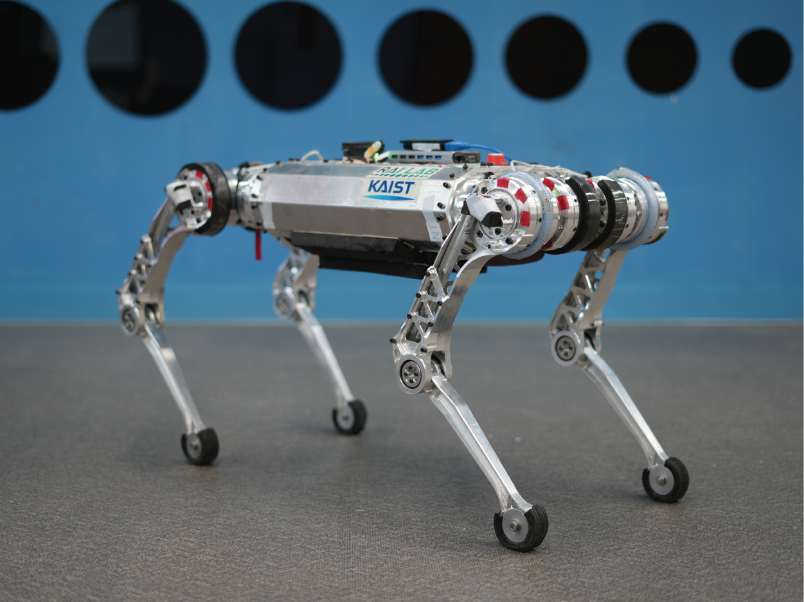
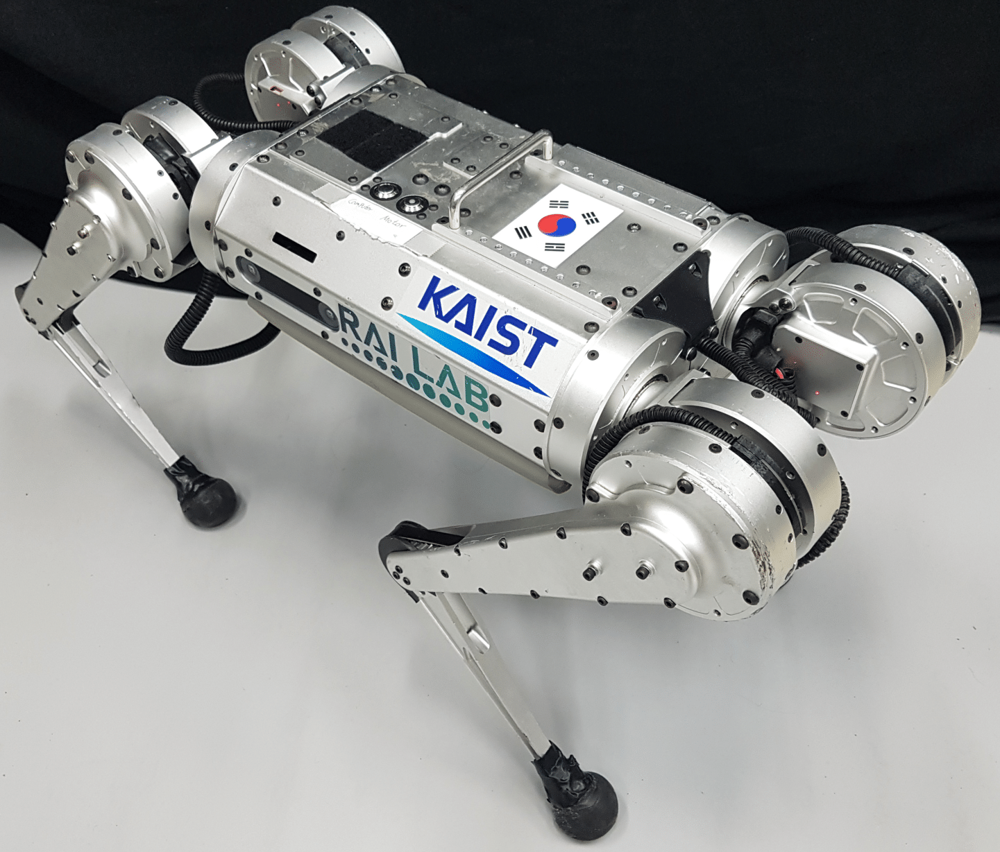
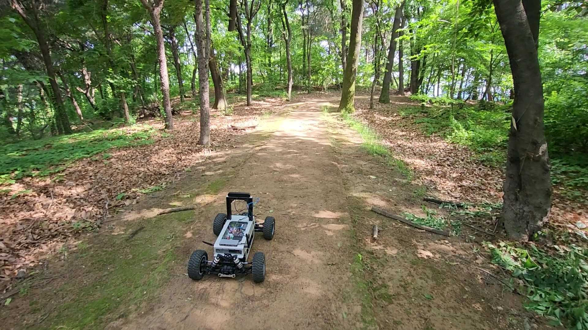

Robots
Raibo
{kind=link}
Raibo is a versatile, middle-sized quadrupedal robot developed by Railab. Its size is appropriate for performing practical tasks such as industrial inspection, exploration, and patrol, and the 12 powerful motors enable highly dynamic maneuvers. Its actuation system and built-in software capable of high-frequency motor control allow for leveraging advanced control methodologies. In the series of our projects, Raibo has showcased stunningly agile and robust locomotion skills over various challenging terrains including hills, stairs, and even sand [1], [2].
Selected Works
[1] Suyoung Choi et al., Learning quadrupedal locomotion on deformable terrain. Sci. Robot. 8, eade2256(2023)
[2] Blind locomotion through the natural environment characterized by steep slopes and scattered debris (ongoing)
Mini Cheetah
{kind=link}
Mini Cheetah is a small, agile four-legged robot which is originally developed by MIT Biomimetic Robotics Lab and manufactured by Naver Labs. Its compact size and powerful actuators allow researchers to fearlessly conduct experiments. Railab utilizes its full potential to develop dynamic and agile locomotion controllers. Trained using reinforcement learning, the Mini Cheetah is capable of high-speed locomotion on various terrains such as asphalt, slippery terrain, and slopes [3].
Selected Works
[3] Gwanghyeon Ji et al., “Concurrent Training of a Control Policy and a State Estimator for Dynamic and Robust Legged Locomotion,” in IEEE Robotics and Automation Letters, vol. 7, no. 2, pp. 4630-4637, April 2022
Raicart
{kind=link}
Raicart is our in-house wheeled robot platform designed for outdoor navigation tasks. The dimensions of the robot are 770mm x 500mm x 480mm, including the Zed2 camera mount, and the weight is 14kg. Raicart demonstrates robust capabilities in traversing unpaved outdoor terrain with utmost stability. The system adeptly changes its heading direction through Ackerman steering, effectively preventing the tires from slipping sideways while maneuvering through curves. All computations and data collection was conducted on NVIDIA Jetson AGX Xavier, a small and powerful embedded PC.
Selected Works
[4] JeongHyun Lee et al., “Learning Vehicle Dynamics From Cropped Image Patches for Robot Navigation in Unpaved Outdoor Terrains,” in IEEE Robotics and Automation Letters, vol. 9, no. 5, pp. 4035-4042, May 2024